plotgardener plots are extremely customizable in
appearance. In this article we will outline some of the major aesthetic
customizations, including general features and specific plot type
customizations.
All the data included in this article can be found in the
supplementary package plotgardenerData.
gpar and common plot customizations
The most common types of customizations are inherited from
grid gpar options. If a function accepts
..., this usually refers to gpar options that
are not explicity listed as parameters in the function documentation.
General valid parameters include:
| alpha | Alpha channel for transparency (number between 0 and 1). |
| fill | Fill color. |
| linecolor | Line color. |
| lty | Line type. (0=blank, 1=solid, 2=dashed, 3=dotted, 4=dotdash, 5=longdash, 6=twodash). |
| lwd | Line width. |
| lineend | Line end style (round, butt, square). |
| linejoin | Line join style (round, mitre, bevel). |
| linemitre | Line mitre limit (number greater than 1). |
| fontsize | The size of text, in points. |
| fontcolor | Text color. |
| fontface | The font face (plain, bold, italic, bold.italic, oblique). |
| fontfamily | The font family. |
| cex | Scaling multiplier applied to symbols. |
| pch | Plotting character, or symbol (integer codes range from 0 to 25). |
Additional fonts for the fontfamily argument can be
imported with the packages extrafont and
showtext. This makes it possible to incorporate special
fonts like Times New Roman, Arial, etc. into plotgardener
figures.
By default, plotgardener plots have transparent
backgrounds when placed on a page. In many functions, this
background color can be changed with the parameter bg.
plotGenes(
chrom = "chr8", chromstart = 1000000, chromend = 2000000,
assembly = "hg19",
bg = "#f6f6f6",
x = 0.5, y = 0.5, width = 2, height = 1, just = c("left", "top"),
default.units = "inches"
)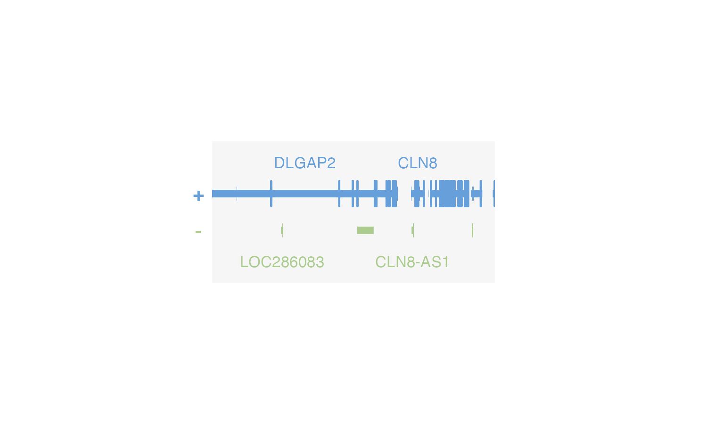
This makes it easy to clearly see the precise dimensional boundaries ofplotgardener plots.
Some plots also benefit from baselines to quickly show where y = 0.
This can aid in data interpretation and guide plot annotation placement.
Baselines can be plotted in selective plots with
baseline = TRUE.
plotRanges(
data = IMR90_ChIP_CTCF_reads,
chrom = "chr21", chromstart = 29073000, chromend = 29074000,
assembly = "hg19",
fill = c("#7ecdbb", "#37a7db"),
baseline = TRUE, baseline.color = "black",
x = 0.5, y = 0.25, width = 6.5, height = 4.25,
just = c("left", "top"), default.units = "inches"
)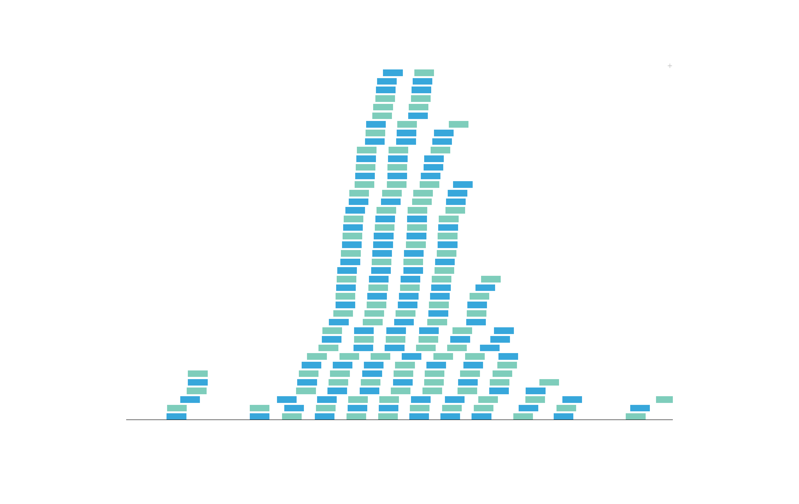
plotgardener provides many useful features specific for
enhancing gene and transcript visualizations:
Since plotgardener utilizes TxDb objects,
orgDb objects, and internal citation information,
plotgardener has access to numerous gene and transcript
identifiers and can customize annotation labels in a variety of
ways.
By default, plotgardener will rank gene labels according
to citation number to prevent label overcrowding. However, we can
provide our own list of prioritized genes to label in a plot. For
example, if we plot the hg19 genes in the region
chr2:1000000-20000000, our plot will show these labels:
pageCreate(
width = 5, height = 1.25,
showGuides = FALSE, xgrid = 0, ygrid = 0
)
genePlot <- plotGenes(
chrom = "chr2", chromstart = 1000000, chromend = 20000000,
assembly = "hg19",
x = 0.25, y = 0.25, width = 4.75, height = 1
)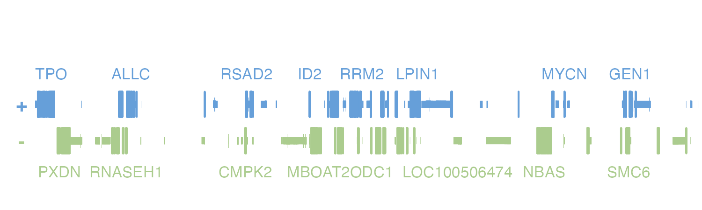
Looking in thegenes object, we can see that there were
numerous genes that were not labeled.
genePlot$genes
#> [1] "MIR548S" "MIR3125" "MIR3681" "RNASEH1-DT" "LOC100506274"
#> [6] "LOC100506405" "MIR3681HG" "MIR4757" "LINC00570" "LINC01804"
#> [11] "LINC01871" "ODC1-DT" "LINC01954" "LOC102723730" "MYCNUT"
#> [16] "GACAT3" "LOC105373394" "LOC105373414" "LOC105373418" "LOC105373438"
#> [21] "LINC01808" "LOC105373461" "RN7SL832P" "CIMIP5" "SLC66A3"
#> [26] "SILC1" "LRATD1" "DDX1" "LPIN1" "ATP6V1C2"
#> [31] "IAH1" "TRIB2" "GRHL1" "HPCAL1" "ID2"
#> [36] "MSGN1" "GEN1" "KCNF1" "KCNS3" "LOC400940"
#> [41] "MYCN" "TRAPPC12" "CPSF3" "SNTG2" "ALLC"
#> [46] "RPS7" "RRM2" "SOX11" "TPO" "DCDC2C"
#> [51] "MYT1L-AS1" "VSNL1" "COLEC11" "KLF11" "ASAP2"
#> [56] "TAF1B" "RSAD2" "GREB1" "RNF144A" "SNORA80B"
#> [61] "MIR4261" "MIR4262" "LINC00276" "LINC01304" "ID2-AS1"
#> [66] "LOC100506474" "NT5C1B-RDH14" "MIR4429" "TRAPPC12-AS1" "PDIA6"
#> [71] "LINC01250" "LOC101928196" "LINC01247" "LOC101929452" "LOC101929551"
#> [76] "LINC01814" "LOC101929752" "KLF11-DT" "LINC01248" "LINC03156"
#> [81] "LINC01246" "MYCNOS" "NRIR" "LOC105373390" "LINC01810"
#> [86] "YWHAQ" "CMPK2" "MBOAT2" "OSR1" "E2F6"
#> [91] "CYS1" "MYT1L" "NTSR2" "RNASEH1" "FLJ33534"
#> [96] "LINC00298" "LINC00299" "GRASLND" "LINC00487" "LINC01376"
#> [101] "ODC1" "NBAS" "ADI1" "KIDINS220" "RDH14"
#> [106] "ADAM17" "EIPR1" "LINC01249" "RAD51AP2" "PXDN"
#> [111] "SMC6" "NOL10" "CYRIA" "ITGB1BP1" "NT5C1B"
#> [116] "ROCK2"If we were particularly interested in MIR3125, we could include this
in the geneOrder parameter to prioritize its labeling:
pageCreate(
width = 5, height = 1.25,
showGuides = FALSE, xgrid = 0, ygrid = 0
)
genePlot <- plotGenes(
chrom = "chr2", chromstart = 1000000, chromend = 20000000,
assembly = "hg19",
geneOrder = c("MIR3125"),
x = 0.25, y = 0.25, width = 4.75, height = 1
)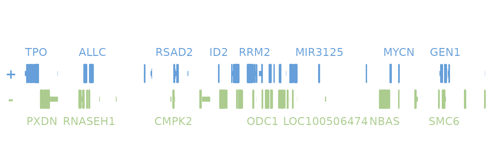
Label IDs used in transcript plots can be customized through
assembly() objects, and transcript label formatting can be
changed through the labels parameter. For example, if we
wish to display both transcript names and their associated gene names,
we can set labels = "both":
pageCreate(
width = 6, height = 5,
showGuides = FALSE, xgrid = 0, ygrid = 0
)
transcriptPlot <- plotTranscripts(
chrom = "chr2", chromstart = 1000000, chromend = 20000000,
assembly = "hg19",
labels = "both",
x = 0.25, y = 0.25, width = 5.5, height = 4.5
)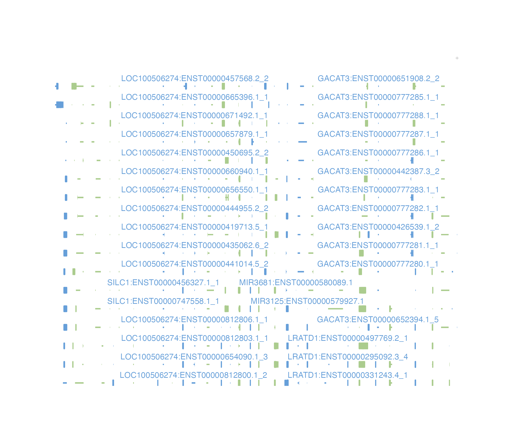
In addition to changing fill and fontcolor
to change the colors of all genes in a plot, specific gene structures
and their labels can be highlighted in a different color with
geneHighlights. If we revisit the genes plot
above, we can highlight RRM2 by creating a data.frame with
“RRM2” in the first column and its highlight color in the second
column:
geneHighlights <- data.frame("geneName" = "RRM2", "color" = "steel blue")We can then pass this into our plotGenes() call:
pageCreate(
width = 5, height = 1.25,
showGuides = FALSE, xgrid = 0, ygrid = 0
)
genePlot <- plotGenes(
chrom = "chr2", chromstart = 1000000, chromend = 20000000,
assembly = "hg19",
geneHighlights = geneHighlights, geneBackground = "grey",
x = 0.25, y = 0.25, width = 4.75, height = 1
)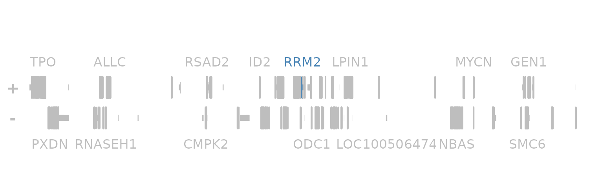
Since geneHighlights is a data.frame, we
can highlight multiple genes in different colors at once. For example,
let’s now highlight RRM2 in “steel blue” and PXDN in “red”:
geneHighlights <- data.frame(
"geneName" = c("RRM2", "PXDN"),
"color" = c("steel blue", "red")
)
pageCreate(
width = 5, height = 1.25,
showGuides = FALSE, xgrid = 0, ygrid = 0
)
genePlot <- plotGenes(
chrom = "chr2", chromstart = 1000000, chromend = 20000000,
assembly = "hg19",
geneHighlights = geneHighlights, geneBackground = "grey",
x = 0.25, y = 0.25, width = 4.75, height = 1
)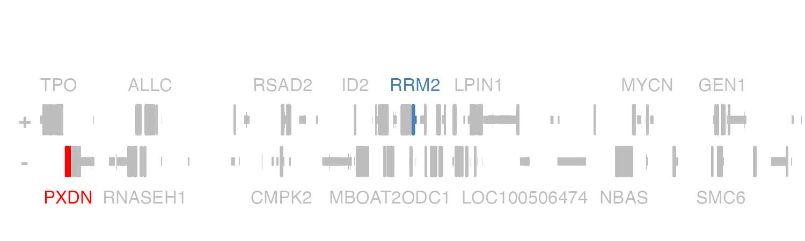
Similar to highlighting specific genes by colors, specific
transcripts can also be highlighted with
transcriptHighlights. We can do this by either specifying
transcripts by name or transcripts by their genes. Let’s plot the
transcripts of the gene track above and label the transcripts of LPIN1
and CMPK2:
transcriptHighlights <- data.frame(
"gene" = c("LPIN1", "CMPK2"),
"color" = c("steel blue", "red")
)
pageCreate(
width = 6, height = 7,
showGuides = FALSE
)
transcriptPlot <- plotTranscripts(
chrom = "chr2", chromstart = 1000000, chromend = 20000000,
assembly = "hg19",
transcriptHighlights = transcriptHighlights,
colorbyStrand = FALSE, fill = "grey",
x = 0.25, y = 0.25, width = 5.5, height = 4.5
)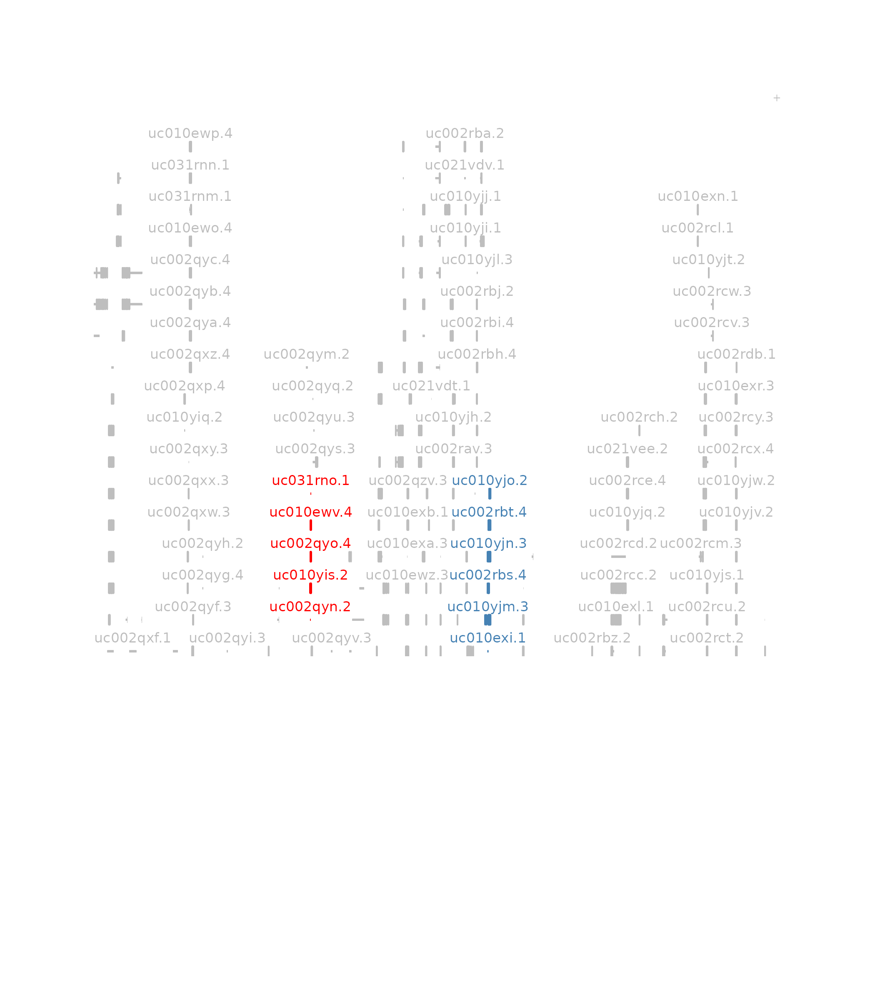
We can now see all transcripts of CMPK2 are colored in red and all
transcripts of LPIN1 are colored in steel blue. If we knew the precise
names of these transcripts, we could also specify them for transcript
highlighting with the following data.frame:
transcriptHighlights <- data.frame(
"transcript" = c("uc010yjo.2", "uc002rbt.4", "uc010yjn.3", "uc002rbs.4",
"uc010yjm.3","uc010exi.1", "uc031rno.1", "uc010ewv.4",
"uc002qyo.4", "uc010yis.2", "uc002qyn.2"),
"color" = c("steel blue", "steel blue", "steel blue", "steel blue",
"steel blue", "steel blue", "red", "red", "red", "red", "red")
)To distinguish which strand a transcript belongs to,
plotTranscripts() colors transcripts by strand with the
parameter colorbyStrand. The first value in
fill colors positive strand transcripts and the second
fill value colors negative strand transcripts. To further
organize transcripts by strand, we can use strandSplit to
separate transcript elements into groups of positive and negative
strands:
pageCreate(
width = 6, height = 5,
showGuides = FALSE, xgrid = 0, ygrid = 0
)
transcriptPlot <- plotTranscripts(
chrom = "chr2", chromstart = 1000000, chromend = 20000000,
assembly = "hg19",
strandSplit = TRUE,
x = 0.25, y = 0.25, width = 5.5, height = 4.5
)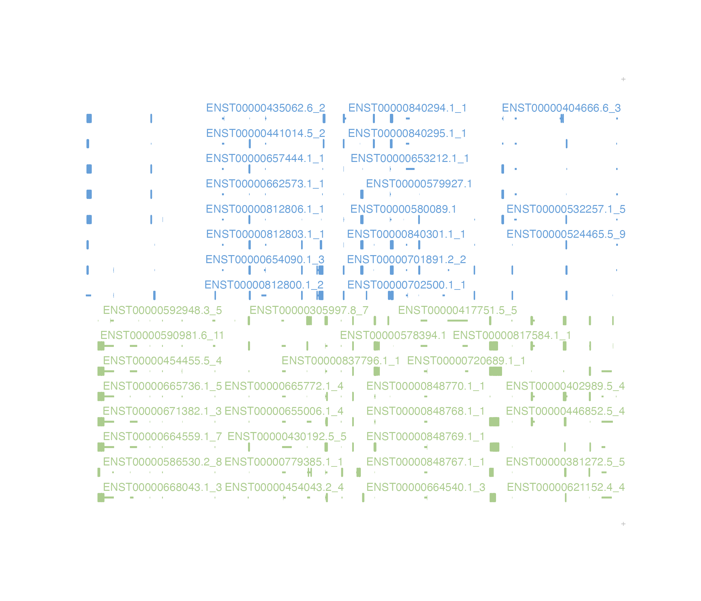
Now all our positive strand transcripts are grouped together above the group of negative strand transcripts.
plotgardener includes many types of customizations for
Hi-C plots. plotgardener provides 3 different Hi-C plotting
functions based on the desired plot shape:
plotHicSquare(): Plots a square, symmetrical Hi-C
plot with genomic coordinates along both the x- and y-axes.
plotHicTriangle(): Plots a triangular Hi-C plot
where the genome region falls along the base of the triangle.
plotHicRectangle(): Plots a triangular Hi-C plot
with additional data filling the surrounding regions to form a
rectangle.
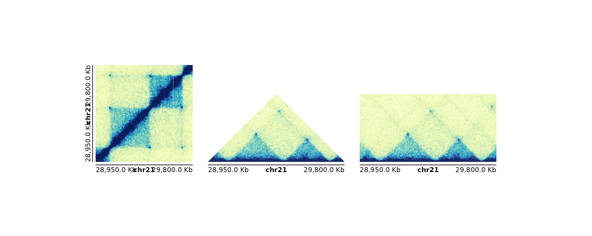
All Hi-C plot types can use different color palettes, and colors can
be linearly or log-scaled with the colorTrans
parameter.
hicSquare plots can be further customized to include two
datasets in one plot. Instead of plotting both symmetrical halves of the
plot, we can set one dataset as half = "top" and the other
dataset as half = "bottom":
data("GM12878_HiC_10kb")
data("IMR90_HiC_10kb")
pageCreate(
width = 3.25, height = 3.25, default.units = "inches",
showGuides = FALSE, xgrid = 0, ygrid = 0
)
params <- pgParams(
chrom = "chr21", chromstart = 28000000, chromend = 30300000,
assembly = "hg19", resolution = 10000,
x = 0.25, width = 2.75, just = c("left", "top"), default.units = "inches"
)
hicPlot_top <- plotHicSquare(
data = GM12878_HiC_10kb, params = params,
zrange = c(0, 200),
half = "top",
y = 0.25, height = 2.75
)
hicPlot_bottom <- plotHicSquare(
data = IMR90_HiC_10kb, params = params,
zrange = c(0, 70),
half = "bottom",
y = 0.25, height = 2.75
)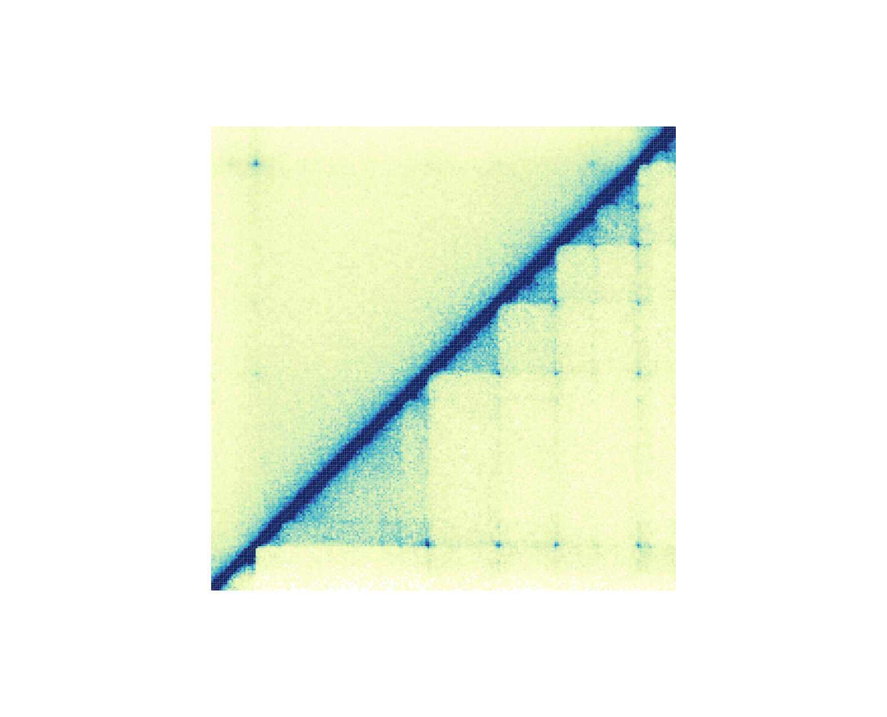
sessionInfo()
#> R version 4.5.2 (2025-10-31)
#> Platform: aarch64-apple-darwin20
#> Running under: macOS Tahoe 26.3.1
#>
#> Matrix products: default
#> BLAS: /System/Library/Frameworks/Accelerate.framework/Versions/A/Frameworks/vecLib.framework/Versions/A/libBLAS.dylib
#> LAPACK: /Library/Frameworks/R.framework/Versions/4.5-arm64/Resources/lib/libRlapack.dylib; LAPACK version 3.12.1
#>
#> locale:
#> [1] en_US.UTF-8/en_US.UTF-8/en_US.UTF-8/C/en_US.UTF-8/en_US.UTF-8
#>
#> time zone: America/New_York
#> tzcode source: internal
#>
#> attached base packages:
#> [1] stats4 grid stats graphics grDevices utils datasets
#> [8] methods base
#>
#> other attached packages:
#> [1] org.Hs.eg.db_3.22.0
#> [2] TxDb.Hsapiens.UCSC.hg19.knownGene_3.22.1
#> [3] GenomicFeatures_1.62.0
#> [4] AnnotationDbi_1.72.0
#> [5] Biobase_2.70.0
#> [6] GenomicRanges_1.62.1
#> [7] Seqinfo_1.0.0
#> [8] IRanges_2.44.0
#> [9] S4Vectors_0.48.1
#> [10] BiocGenerics_0.56.0
#> [11] generics_0.1.4
#> [12] plotgardenerData_1.16.0
#> [13] plotgardener_1.16.0
#>
#> loaded via a namespace (and not attached):
#> [1] tidyselect_1.2.1 blob_1.3.0
#> [3] dplyr_1.2.1 farver_2.1.2
#> [5] Biostrings_2.78.0 S7_0.2.1
#> [7] bitops_1.0-9 fastmap_1.2.0
#> [9] RCurl_1.98-1.18 GenomicAlignments_1.46.0
#> [11] XML_3.99-0.23 digest_0.6.39
#> [13] lifecycle_1.0.5 plyranges_1.30.1
#> [15] KEGGREST_1.50.0 RSQLite_2.4.6
#> [17] magrittr_2.0.5 compiler_4.5.2
#> [19] rlang_1.2.0 sass_0.4.10
#> [21] tools_4.5.2 yaml_2.3.12
#> [23] data.table_1.18.2.1 rtracklayer_1.70.1
#> [25] knitr_1.51 S4Arrays_1.10.1
#> [27] bit_4.6.0 curl_7.0.0
#> [29] DelayedArray_0.36.1 RColorBrewer_1.1-3
#> [31] abind_1.4-8 BiocParallel_1.44.0
#> [33] withr_3.0.2 purrr_1.2.2
#> [35] desc_1.4.3 Rhdf5lib_1.32.0
#> [37] ggplot2_4.0.2 scales_1.4.0
#> [39] SummarizedExperiment_1.40.0 cli_3.6.6
#> [41] rmarkdown_2.31 crayon_1.5.3
#> [43] ragg_1.5.2 otel_0.2.0
#> [45] rstudioapi_0.18.0 httr_1.4.8
#> [47] rjson_0.2.23 DBI_1.3.0
#> [49] cachem_1.1.0 rhdf5_2.54.1
#> [51] parallel_4.5.2 ggplotify_0.1.3
#> [53] XVector_0.50.0 restfulr_0.0.16
#> [55] matrixStats_1.5.0 yulab.utils_0.2.4
#> [57] vctrs_0.7.3 Matrix_1.7-5
#> [59] jsonlite_2.0.0 gridGraphics_0.5-1
#> [61] bit64_4.6.0-1 systemfonts_1.3.2
#> [63] strawr_0.0.92 jquerylib_0.1.4
#> [65] glue_1.8.0 pkgdown_2.2.0
#> [67] codetools_0.2-20 gtable_0.3.6
#> [69] GenomeInfoDb_1.46.2 BiocIO_1.20.0
#> [71] UCSC.utils_1.6.1 tibble_3.3.1
#> [73] pillar_1.11.1 rappdirs_0.3.4
#> [75] htmltools_0.5.9 rhdf5filters_1.22.0
#> [77] R6_2.6.1 textshaping_1.0.5
#> [79] evaluate_1.0.5 lattice_0.22-9
#> [81] png_0.1-9 Rsamtools_2.26.0
#> [83] cigarillo_1.0.0 memoise_2.0.1
#> [85] bslib_0.10.0 Rcpp_1.1.1
#> [87] SparseArray_1.10.10 xfun_0.57
#> [89] fs_2.0.1 MatrixGenerics_1.22.0
#> [91] pkgconfig_2.0.3